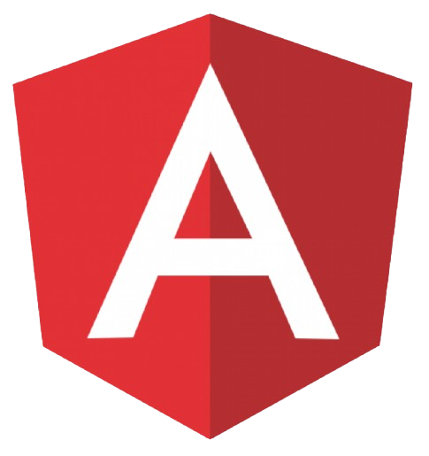

<body>

  <header>
    <nav>
      <ul>
        <li><a href="#Experiencias">Experiências</a></li>
        <li><a href="#Projetos">Projetos</a></li>
        <li><a href="#Certificados">Certificados</a></li>
        <li><a href="#Sobre">Sobre</a></li>
      </ul>
    </nav>
  </header>

  <div class="container">
    <div class="head">
      <div class="carousel">
        <div class="carousel-images">

          
          
          
          
          
          
          
          
          
        </div>
      </div>
    </div>

    <section class="main">
      <div class="info">
        <h2>Quem sou eu?</h2>
        <p>Meu nome é Luiz Carlos</p>
        <h3>Sou programador e desenvolvedor Back-End</h3>

        <div class="social-links">
          <i class="fa-solid fa-laptop-code fa-4x social-links_I" style="color: #FFD43B;"></i>

          <a href="https://www.linkedin.com/in/luixcarlos00" target="_blank">
            <i class="fa-brands fa-linkedin fa-4x social-links_I" style="color: #3390d7;"></i>
          </a>
          <a href="https://github.com/luixcarlos00" target="_blank">
            <i class="fa-brands fa-github fa-4x social-links_I" style="color: #6e5494;"></i>
          </a>
        </div>

        <button onclick="window.location.href='curriculo.pdf'">Currículo</button>
      </div>

      <div class="play">
        <button (click)="iniciarJogo()">
          <i class="fa fa-play"></i>
        </button>
      </div>
    </section>


    <section id="Experiencias" class="section_container">
      <div class="title ">
        <div>Experiências</div>
      </div>

      <div class="content_container   content_cet">

        <div class="separator"> </div>

        <div class="info">
          <div class="experience_header">
            <span class="job-title">Desenvolvedor de Sistemas</span>
            <br>
            <li>Março, 2023 - March, 2023</li>

          </div>
          <br>

          <label>
            Durante minha experiência na Unifor MG, desenvolvi sistemas internos para auxiliar professores e
            funcionários da universidade. Refazer e modernizar esses sistemas me permitiu contribuir
            significativamente
            para o desenvolvimento web, otimizando a gestão de informações e processos, o que facilitou as atividades
            diárias e melhorou a eficiência operacional.
          </label>
          <label>


            Trabalhando de perto com os usuários finais, assegurei que as soluções fossem práticas e intuitivas. As
            interfaces interativas e responsivas, junto com serviços robustos e seguros, garantiram uma experiência de
            uso eficiente e a integridade dos dados. Essa experiência permitiu-me contribuir significativamente para o
            ambiente educacional da Unifor MG, transformando processos internos através da tecnologia.
          </label>
        </div>
      </div>

      <div>
        <a href="mailto:luixcarlos00@gmail.com"> <button
            style="padding: 10px; background-color: #f1c50e; color: white;">Entrar em Contato</button></a>
      </div>
    </section>


    <section id="Projetos" class="section_container" style="background-color: #423e46;">

      <div class="title">
        <p>Projetos</p>
      </div>

      <div class="content_container">
        <button mat-button (click)="previousPage()">&#9664;</button>
        <div class="experience_block">
          <mat-card class="example_card" *ngFor="let item of visibleItems" (click)="openProject(item.codigo)">
            
            <mat-card-content class="card_content">
              <ul>
                <li><label>{{ item.title }}</label></li>
              </ul>
              <label>{{ item.description }}</label>
            </mat-card-content>
          </mat-card>
        </div>
        <button mat-button (click)="nextPage()">&#9654;</button>
      </div>
    </section>


    <section id="Certificados" class="section_container" style="background-color: #39343d;">
      <div class="title">
        <p>Certificados</p>
      </div>
      <div class="inner_content">
        <div class="card_container">
          <div class="card_C" *ngFor="let card of cards" (click)="openCertificate(card)">
            
          </div>
        </div>
      </div>
    </section>


    <section id="Sobre" class="section_container">
      <div class="title ">Sobre Mim</div>

      <div class="info">

        <label>
          Sou um programador nacido em 2001, apaixonado por tecnologia e jogos. Minha jornada no mundo da computação
          começou quando ingressei no curso de Ciência da Computação na UNIFOR-MG em 2019. Desde então, minha
          curiosidade
          e entusiasmo por aprender coisas novas só têm crescido.
        </label>
        <label>
          Durante a faculdade, mergulhei fundo nos estudos e em diversos projetos que me permitiram explorar diferentes
          áreas da tecnologia. Desenvolver software, entender os meandros dos algoritmos e criar soluções inovadoras se
          tornaram mais do que uma carreira, mas uma verdadeira paixão.
        </label>
        <label>
          Para mim, cada desafio é uma oportunidade de aprendizado e crescimento. Gosto de me testar e de resolver
          problemas complexos, e nada me deixa mais satisfeito do que encontrar a solução para um bug teimoso ou ver um
          projeto finalmente ganhar vida.
        </label>
        <label>
          Meu objetivo é continuar me desafiando, aprendendo e contribuindo para projetos que façam a diferença. Se há
          algo que me define, é a minha disposição incansável para enfrentar novos desafios e minha paixão por tudo o
          que
          envolve tecnologia.
        </label>

      </div>
      <div class="title ">Expecialidades</div>

      <div class="image-container">

        <div class="image_wrapper">
          
        </div>
        <div class="image_wrapper">
          
        </div>
        <div class="image_wrapper">
          
        </div>
        <div class="image_wrapper">
          
        </div>

      </div>
      <footer>
        <p>© 2024 Luiz Carlos - Todos os direitos reservados.</p>
      </footer>
    </section>
  </div>


</body>
